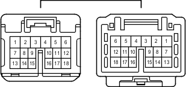

Наименование
Жгут проводов двери багажного отделения № 1 и напольный жгут проводов (панель двери багажного отделения)
Код
XQ1
Каталожный номер
90980-12745/90980-12744
Цвет
Белый
Технические характеристики

Расположение
Электропроводка в кузове (для 3-дверных моделей моделей с левосторонним рулевым управлением)
Электропроводка в кузове (для 5-дверных моделей моделей с левосторонним рулевым управлением)
Электропроводка в кузове (для 3-дверных моделей моделей с правосторонним рулевым управлением)
Электропроводка в кузове (для 5-дверных моделей моделей с правосторонним рулевым управлением)
Система
Система автоматического управления освещением
Иммобилайзер двигателя (для моделей с системой посадки и запуска)
Система посадки и запуска
Механизм открывания защелки стекла
Система предупреждения об оставлении ключа в замке зажигания (для моделей без системы посадки и запуска)
Система автоматического выключения освещения
Система оповещения о невыключенном освещении
Задние стеклоочиститель и стеклоомыватель (для моделей с левосторонним рулевым управлением)
Задние стеклоочиститель и стеклоомыватель (для моделей с правосторонним рулевым управлением)
Система запуска (для моделей с системой посадки и запуска)
Система блокировки рулевого управления (для моделей с системой посадки и запуска)
Противоугонная система
Система дистанционной блокировки дверей (для моделей с системой посадки и запуска)